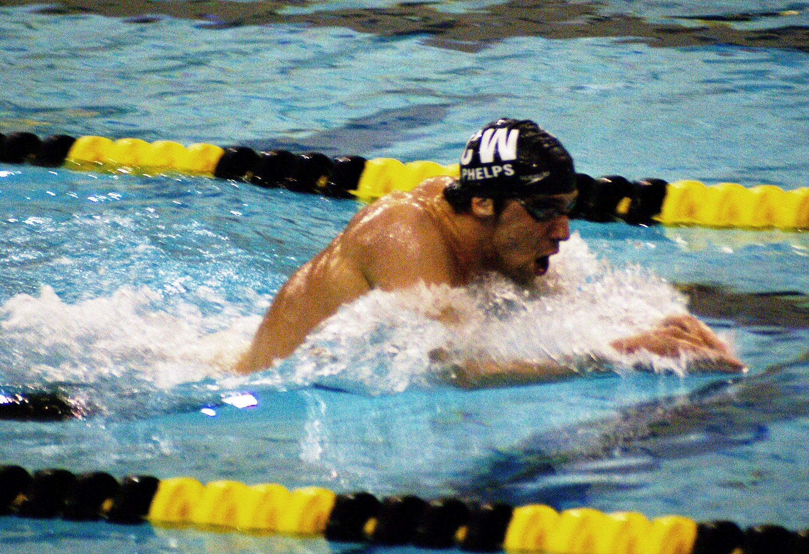
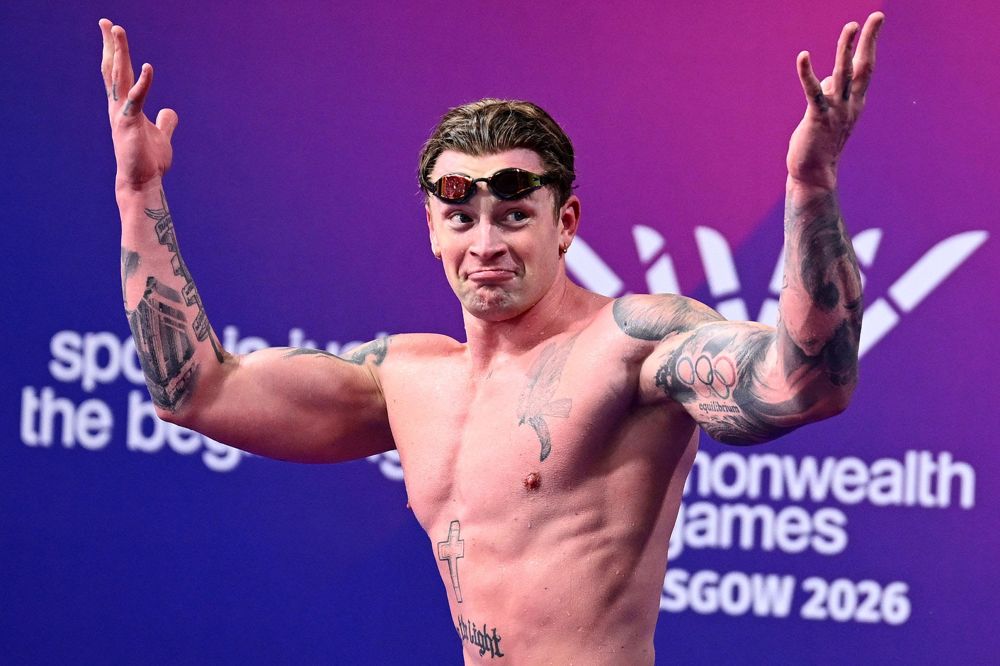

Breaststroke is a unique stroke which is often called the slowest stroke in competitive swimming. Timing and coordination is very important. It is also the only stroke to not have a limit to how far you can swim underwater before surfacing. It is the 3rd stroke swum in the IM
The lengths swum include:

Freestlye
Backstroke
Breaststroke
Butterfly
Individual Medley